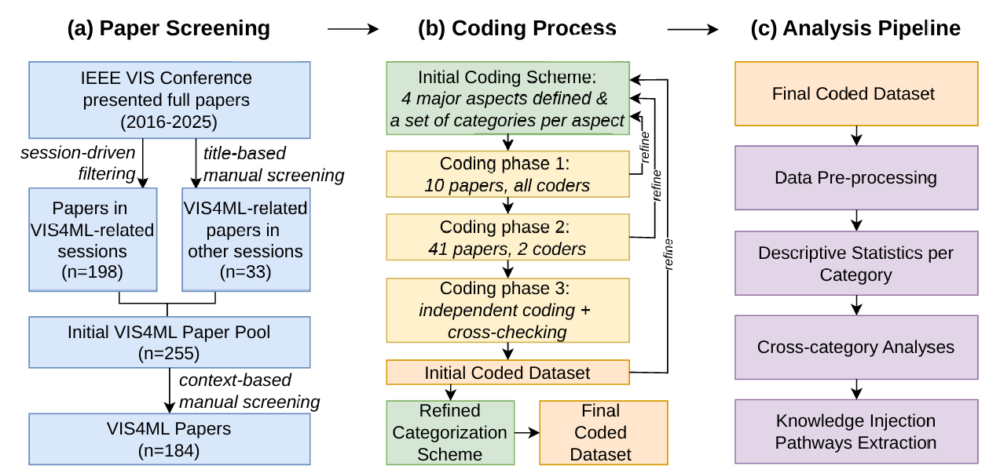
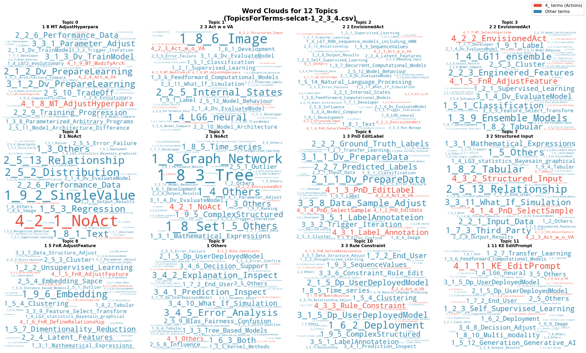

Pairwise Relationships (Sankey Diagrams)
Scroll horizontally to view selected pairwise category relationships.


A Comprehensive Survey of VIS4ML Workflows
Yiwen Xing; Philip Beaucamp; Joyraj Chakraborty; Afrah Farea; Yuanzhe Jin; Saiful Khan; Gennady Andrienko; Natalia Andrienko; Min Chen.

Figure 1: Overview of the survey process: (a) Paper screening; (b) Coding process and categorization scheme refinement; (c) Analysis pipeline..

Figure 2: The important terms in 12 topics. Terms from category 4 (actions) are highlighted in red, while others are in blue.
Scroll horizontally to view selected pairwise category relationships.
Scroll horizontally to view the statistical breakdown charts.


Detailed experimental results, coding schemes, and additional data analysis can be found in our repository:
Access the full data repository: ml-knowledge-inject-va/SpplementaryMaterials
This section contains the categorized list of papers analyzed in the survey. You can also download the full metadata in the XLS file above.